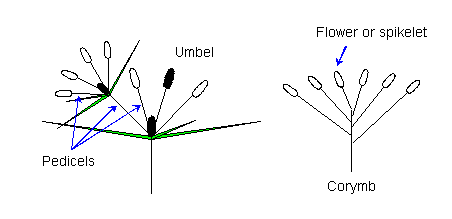

Umbel.
An umbrella-shaped inflorescence with all the stalks (pedicels) arising from the top of the main stem. Umbels are sometimes compound, with all the stalks (peduncles) arising from the same point and giving rise to several terminal flower stalks (pedicels)